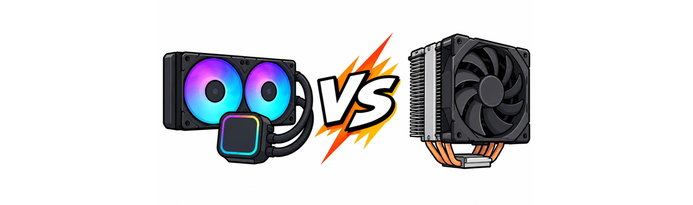

AIO vs Air Cooling: Which Is Right for Your CPU?
Liquid or air? Compare cooling performance, noise, reliability, cost and case fit — and find out which CPU cooler actually makes sense for your build.
Picking a CPU cooler feels like it should be simple, but the internet has turned it into a war: liquid cooling looks premium and futuristic, while air coolers have a reputation for being boring but bulletproof. So which one do you actually need? The honest answer is that for most PCs the gap is much smaller than the marketing suggests. Here's how AIO liquid coolers and air coolers really compare — on temperatures, noise, reliability, price, and fit — so you can pick the right one for your build instead of the one with the nicest lighting.
How Do Air Coolers and AIOs Actually Work?
Air Coolers: A Heatsink, Heat Pipes, and a Fan
An air cooler is a metal block (the heatsink) that sits on top of your CPU. Copper heat pipes carry heat up into a stack of thin aluminium fins, and one or two fans blow air through those fins to carry the heat away. That's it. The only moving parts are the fans.
Air coolers range from small, cheap tower coolers to huge dual-tower designs that rival liquid cooling on many CPUs.
Quick tip: Tall air coolers can overhang your RAM slots or hit your case's side panel, so always check cooler height and RAM clearance before buying.
AIOs: A Sealed Loop With a Pump and Radiator
AIO stands for "all-in-one." It's a sealed liquid loop that comes pre-filled. A cold plate sits on the CPU, a small pump circulates coolant through two tubes to a radiator, and fans on that radiator push the heat out of your case. Radiators come in 120mm, 240mm, 280mm, 360mm and even 420mm sizes — the bigger the radiator, the more heat it can shed.
Because the heavy radiator mounts to the case instead of the CPU socket, the area around your CPU stays clear. That's a big reason AIOs look so clean.
Quick tip: You don't need to fill, bleed, or maintain an AIO. It's a sealed unit — you just mount it and plug it in.
Air vs AIO: The Real Differences
1. Cooling Performance
A large 360mm AIO has more thermal headroom than any air cooler when your CPU is pulling a lot of power for a long time — think heavy video rendering or all-core stress tests on a high-end chip. In independent tests the gap between a big AIO and a flagship dual-tower air cooler under sustained heavy load usually lands somewhere between a few degrees and around 10–15°C, depending on the exact coolers and the test.
But here's the catch: for the CPUs most people actually run, which stay well under about 200W while gaming, a good air cooler and a good AIO land close together. A cheap 120mm AIO with a single fan isn't automatically better than a quality tower cooler — often it's worse.
Quick stat: The heavier your sustained workload, the more an AIO pulls ahead. For gaming and everyday use, the difference is far smaller.
2. Noise
This one surprises people: a large air cooler running slow fans is often quieter than a 360mm AIO, because the AIO has a pump and the air cooler doesn't. Pump hum is a low, constant sound that some people never notice and others find annoying in a quiet room.
Under heavy load the story can flip. A big radiator with several fans can move more air at lower RPM, so a well-tuned AIO can sound calmer than a small air cooler that has to spin its fan hard.
Recommendation: If you're sensitive to constant background noise, go air. If you want the quietest full-load behaviour on a hot CPU, a large AIO with good fans is hard to beat.
3. Reliability and Lifespan
An air cooler has one failure point — the fan — and when a fan wears out you can usually replace it for a few dollars. A good air cooler can realistically outlive several PC builds.
An AIO's pump is a moving part with a finite life. Modern sealed AIOs commonly last five years or more, but when the pump fails the whole unit is effectively done. Coolant also slowly permeates through the tubing over many years. Real leaks are rare on reputable brands, but they're a failure mode air coolers simply don't have.
Quick tip: Check the warranty length. A longer warranty on a cooler is a good hint of how much confidence the manufacturer has in it.
4. Price
Air coolers span from budget coolers around the price of a pizza to premium flagships at roughly $100–$110. AIOs start higher and climb quickly — 360mm models with fancy screens and lighting can pass $200. Prices move around, so always check live listings.
Because performance per dollar is where air coolers shine, a mid-priced tower cooler is often the smarter spend, leaving more of your budget for the GPU or RAM — and with RAM prices where they are in 2026, every saved dollar counts.
Recommendation: Spending $40–$60 on a solid air cooler beats spending $80 on a weak AIO.
5. Fit, Looks, and Maintenance
AIOs need a case that supports the radiator size you want, and you'll need to plan where the radiator mounts (top or front). Air coolers need enough height clearance and RAM clearance, and very large ones can make the first install fiddly.
On looks, AIOs give a clean, uncluttered socket area, which many people love in a windowed case. Air coolers look more functional. For maintenance, air coolers just need dusting every so often; AIOs need radiator dusting too, plus you should listen for unusual pump noise.
Which Cooler Should You Pick for Your CPU?
Mainstream CPUs (Ryzen 5, Ryzen 7, Core i5, Core i7 non-K)
These chips run cool enough that a quality air cooler handles them easily and quietly. An AIO here is mostly a style choice. You'll get better value from a good tower cooler.
Recommendation: Air cooler. Put the money you save toward the parts that actually raise your frame rates.
High-End and Overclocked CPUs (Ryzen 9, Core i9, K-series)
Flagship processors that pull 200W or more under sustained load are where a 280mm or 360mm AIO makes real sense. The bigger radiator keeps temperatures lower and helps the CPU hold boost clocks for longer in heavy workloads like rendering, compiling, and streaming while gaming.
A top-tier dual-tower air cooler is still a strong, quieter, and longer-lived option — it just runs a few degrees warmer at the extreme end.
Recommendation: 280mm or 360mm AIO if you push your CPU hard every day; otherwise a flagship air cooler is still fine.
Small Form Factor and Compact Builds
In small cases, cooler height is the limit. Low-profile air coolers are quiet and simple but can't cool a hot CPU. A 240mm AIO mounted to the case can fit where a tall tower never could, so compact builds are one of the best places for liquid cooling.
If you're building small, read our guide to choosing the right motherboard size too — it affects what cooler fits.
Frequently Asked Questions
Do AIO coolers leak?
Leaks are rare on reputable brands, but they can happen, and an air cooler can't leak at all. Buying from a well-known manufacturer with a solid warranty keeps the risk very low.
How long does an AIO last?
Most modern sealed AIOs last five years or more, with the pump being the main wear item. Air coolers can last a decade or longer, and their fans can be replaced.
Do I need to apply thermal paste to an AIO?
Most AIOs come with thermal paste pre-applied on the cold plate. Air coolers often do too, but many also include a tube in the box. Read the manual for your specific cooler.
Is a 360mm AIO better than a big air cooler?
For sustained loads above roughly 200W, a 360mm radiator has more headroom. For most CPUs and most gaming, a flagship air cooler is close enough that fit, noise, and price should drive the decision.
Bottom line: For most PCs, a good air cooler is the smarter buy — it's cheaper, extremely reliable, and often quieter. An AIO earns its place on high-end CPUs, compact cases, and clean-looking windowed builds. Pick based on your CPU's power draw, your case, and how much you care about noise, not on which one looks cooler. Whichever you choose, mount it properly and make sure your case airflow is solid.
Ready to install your cooler? Follow our full build walkthrough.
👉 Read: How to Assemble Your First PC Step by Step